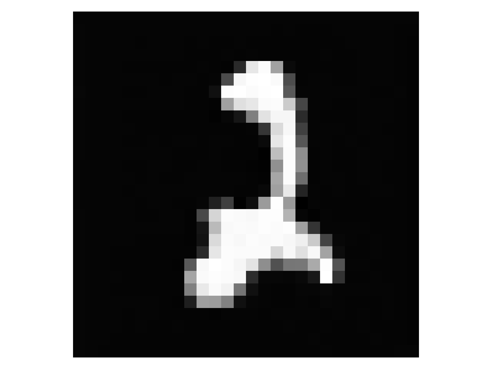
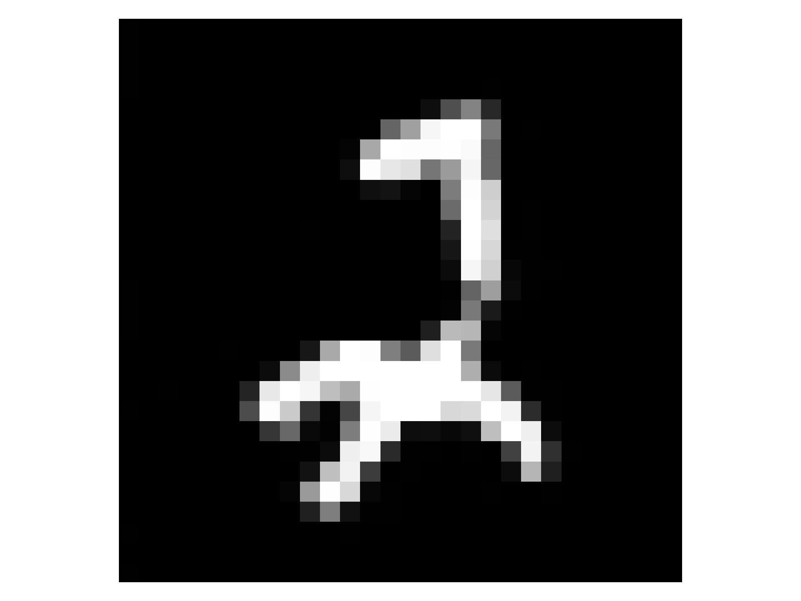
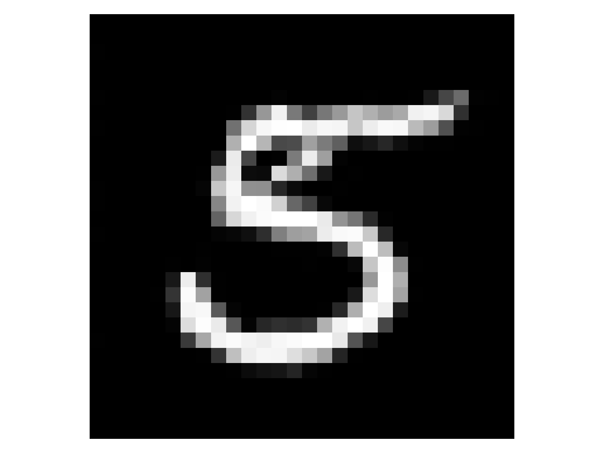
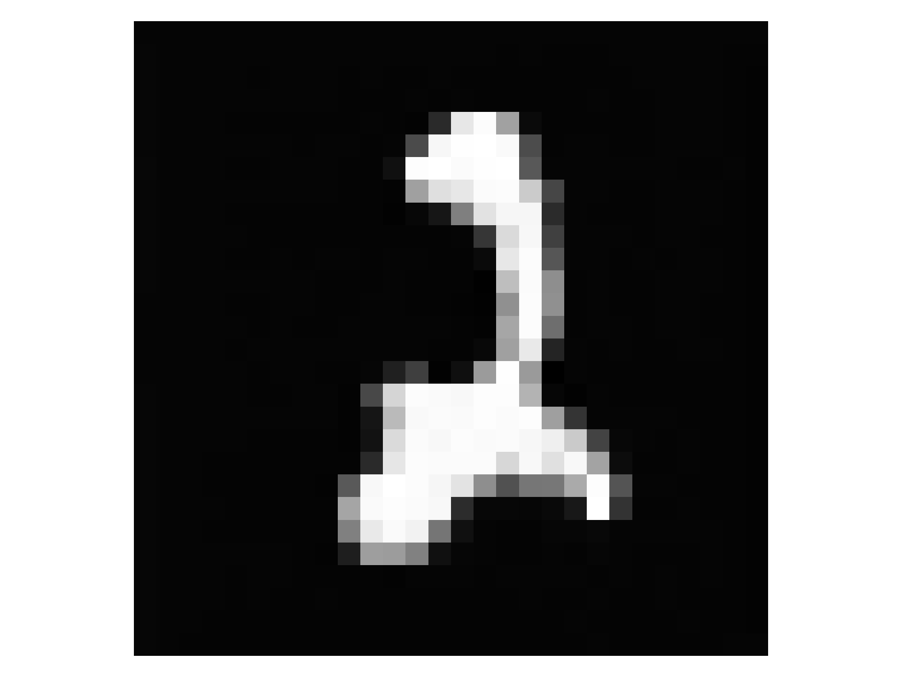
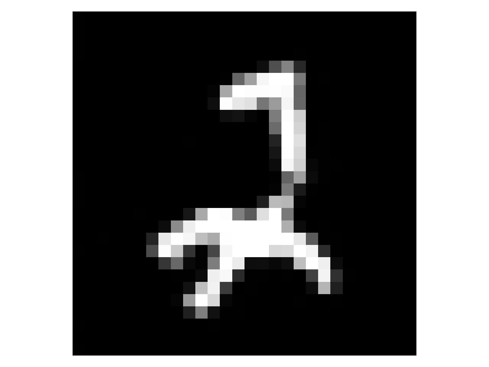
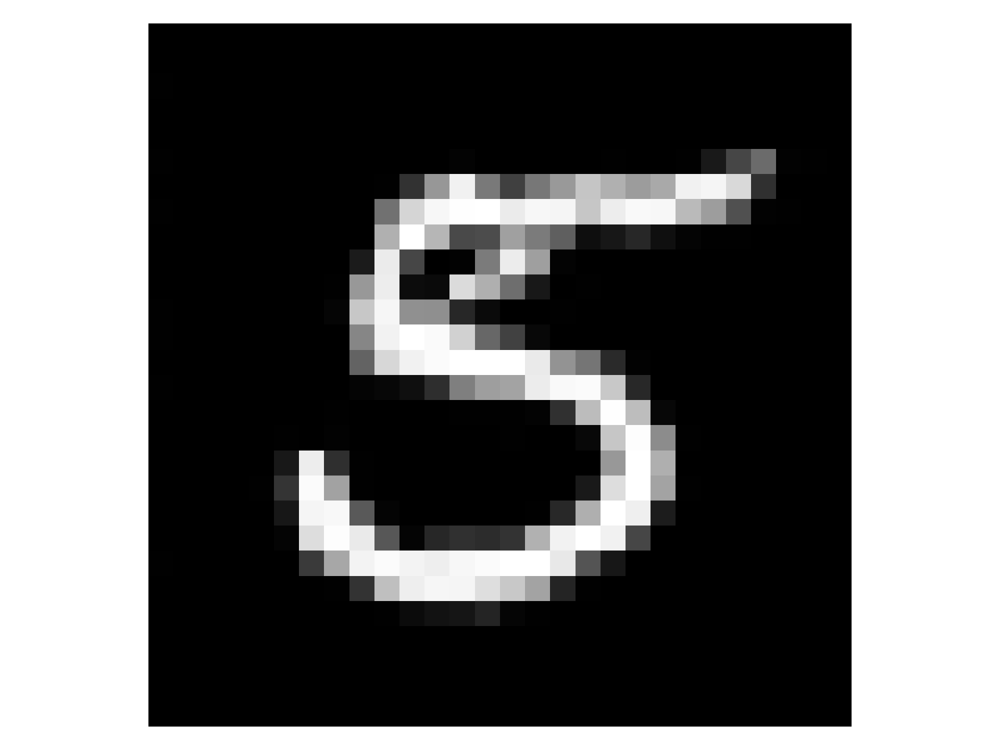

CIFAR-10 Dataset
CIFAR-10 dataset provides visualizations of diffusion models with colorful natural images like animals and vehicles.
Comparision between the canonical base and eigen base
We display the average trajectory per class in the diffusion process along different axis. On the left we use the axis of the canonical base, while on the right we use the axis of an eigen base of the covariance matrix of the data. The colors correspond to the classes. The vertical dash line correspond to the estimated transition time. The transitions are not visible in the canonical base.


Comparision between PCA and Online PCA
We observe that the differences between the estimated eigen values using PCA and online PCA is marginal. This suggests that our proposed method can be applied in practical setups using online PCA approaches.
PCA versus Online PCA
These plots display all the trajectories regardless of the classes.

 




